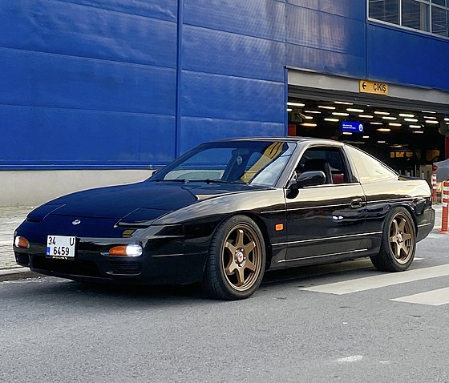

| Silvia | 180sx | 200sx | 240sx |
Silvia
| SILVIA | |
| Lata produkcji | 1988-1994 |
| Nadwozie | 2-drzwiowe coupe 2-drzwiowy kabriolet |
| Silnik | 1.8 CA18DE R4 1.8 CA18DET R4 2.0 SR20DE R4 2.0 SR20DET R4 |
| Skrzynia biegów | 4-biegowy automat 5-biegowy manual |
| Wymiary | Rozstaw osi: 2475mm Długość: 4521mm Szerokość: 1689mm Wysokość: 1290mm Masa: 1180-1224kg |
Tutaj umieść tekst lshxls Przypadkowe słowo dwa tysiące sto trzydzieści siedem Przypadkowe słowo dwa tysiące sto trzydzieści siedemPrzypadkowe słowo dwa tysiące sto trzydzieści siedemPrzypadkowe słowo dwa Tutaj umieść tekst lshxls Przypadkowe słowo dwa tysiące sto trzydzieści siedem Przypadkowe słowo dwa tysiące sto trzydzieści siedemPrzypadkowe słowo dwa tysiące sto trzydzieści siedemPrzypadkowe słowo dwa Tutaj umieść tekst lshxls Przypadkowe słowo dwa tysiące sto trzydzieści siedem Przypadkowe słowo dwa tysiące sto trzydzieści siedemPrzypadkowe słowo dwa tysiące sto trzydzieści siedemPrzypadkowe słowo dwa Tutaj umieść tekst lshxls Przypadkowe słowo dwa tysiące sto trzydzieści siedem Przypadkowe słowo dwa tysiące sto trzydzieści siedemPrzypadkowe słowo dwa tysiące sto trzydzieści siedemPrzypadkowe słowo dwa
180SX
| 180SX | |
| Lata produkcji | 1988 - 1998 |
| Nadwozie | 3-drzwiowy hatchback/ fastback |
| Silnik | 1.8 CA18DET R4 2.0 SR20DE R4 2.0 SR20DET R4 |
| Skrzynia biegów | 4-biegowy automat 5-biegowy manual |
| Wymiary | Rozstaw osi: 2475mm Długość: 4520mm (1996-1998) 4540mm (1989-1996) Szerokość: 1690mm Wysokość: 1290mm Masa: 1170-1270kg |
Tutaj umieść tekst lshxls Przypadkowe słowo dwa tysiące sto trzydzieści siedem Przypadkowe słowo dwa tysiące sto trzydzieści siedemPrzypadkowe słowo dwa tysiące sto trzydzieści siedemPrzypadkowe słowo dwa Tutaj umieść tekst lshxls Przypadkowe słowo dwa tysiące sto trzydzieści siedem Przypadkowe słowo dwa tysiące sto trzydzieści siedemPrzypadkowe słowo dwa tysiące sto trzydzieści siedemPrzypadkowe słowo dwa Tutaj umieść tekst lshxls Przypadkowe słowo dwa tysiące sto trzydzieści siedem Przypadkowe słowo dwa tysiące sto trzydzieści siedemPrzypadkowe słowo dwa tysiące sto trzydzieści siedemPrzypadkowe słowo dwa Tutaj umieść tekst lshxls Przypadkowe słowo dwa tysiące sto trzydzieści siedem Przypadkowe słowo dwa tysiące sto trzydzieści siedemPrzypadkowe słowo dwa tysiące sto trzydzieści siedemPrzypadkowe słowo dwa
200SX
| 200SX | |
| Lata produkcji | 1988-1993 |
| Nadwozie | 3-drzwiowy hatchback/ fastback |
| Silnik | 1.8 CA18DET turbo R4 |
| Skrzynia biegów | 4-biegowy automat 5-biegowy manual |
| Wymiary | rozstaw osi: 2475mm Długość: 4520mm Szerokość: 1690mm Wysokość: 1290mm Masa: 1224kg |
Tutaj umieść tekst lshxls Przypadkowe słowo dwa tysiące sto trzydzieści siedem Przypadkowe słowo dwa tysiące sto trzydzieści siedemPrzypadkowe słowo dwa tysiące sto trzydzieści siedemPrzypadkowe słowo dwa Tutaj umieść tekst lshxls Przypadkowe słowo dwa tysiące sto trzydzieści siedem Przypadkowe słowo dwa tysiące sto trzydzieści siedemPrzypadkowe słowo dwa tysiące sto trzydzieści siedemPrzypadkowe słowo dwa Tutaj umieść tekst lshxls Przypadkowe słowo dwa tysiące sto trzydzieści siedem Przypadkowe słowo dwa tysiące sto trzydzieści siedemPrzypadkowe słowo dwa tysiące sto trzydzieści siedemPrzypadkowe słowo dwa Tutaj umieść tekst lshxls Przypadkowe słowo dwa tysiące sto trzydzieści siedem Przypadkowe słowo dwa tysiące sto trzydzieści siedemPrzypadkowe słowo dwa tysiące sto trzydzieści siedemPrzypadkowe słowo dwa
240SX
| 240SX | |
| Lata produkcji | 1989-1994 |
| Nadwozie | 2-drzwiowe coupe 3-drzwiowy hatchback 2-drzwiowy kabriolet |
| Silnik | 2.4 KA24D R4 2.4 KA24DE R4 |
| Skrzynia biegów | 4-biegowy automat 5-biegowy manual |
| Wymiary | rozstaw osi: 2475mm Długość: 4521mm Szerokość: 1689mm Wysokość: 1290mm Masa: 1224kg |
Tutaj umieść tekst lshxls Przypadkowe słowo dwa tysiące sto trzydzieści siedem Przypadkowe słowo dwa tysiące sto trzydzieści siedemPrzypadkowe słowo dwa tysiące sto trzydzieści siedemPrzypadkowe słowo dwa Tutaj umieść tekst lshxls Przypadkowe słowo dwa tysiące sto trzydzieści siedem Przypadkowe słowo dwa tysiące sto trzydzieści siedemPrzypadkowe słowo dwa tysiące sto trzydzieści siedemPrzypadkowe słowo dwa Tutaj umieść tekst lshxls Przypadkowe słowo dwa tysiące sto trzydzieści siedem Przypadkowe słowo dwa tysiące sto trzydzieści siedemPrzypadkowe słowo dwa tysiące sto trzydzieści siedemPrzypadkowe słowo dwa Tutaj umieść tekst lshxls Przypadkowe słowo dwa tysiące sto trzydzieści siedem Przypadkowe słowo dwa tysiące sto trzydzieści siedemPrzypadkowe słowo dwa tysiące sto trzydzieści siedemPrzypadkowe słowo dwa
Stary Japoniec | Automotyw | Wikipedia